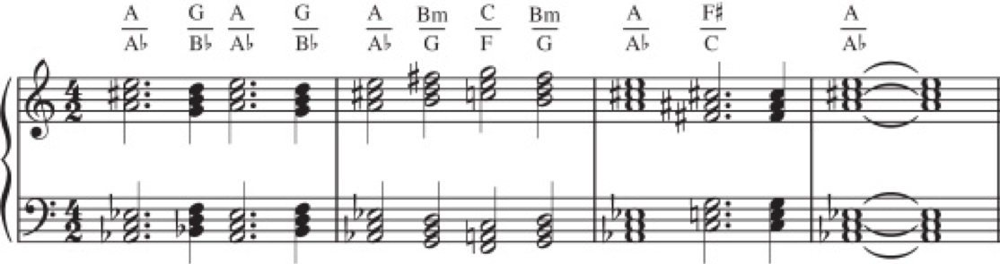
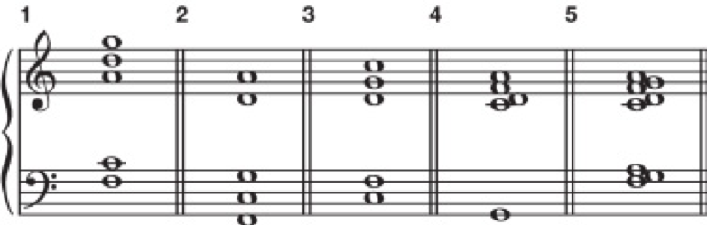
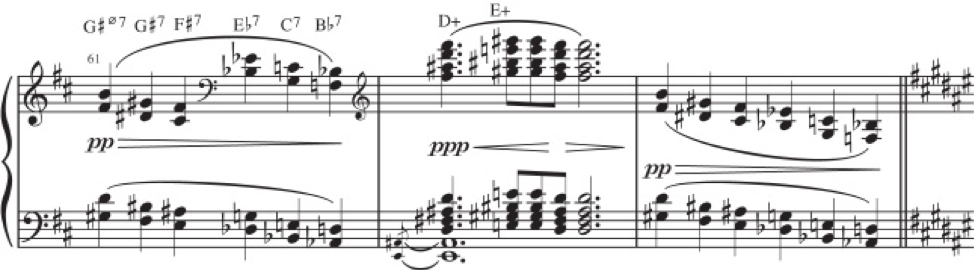
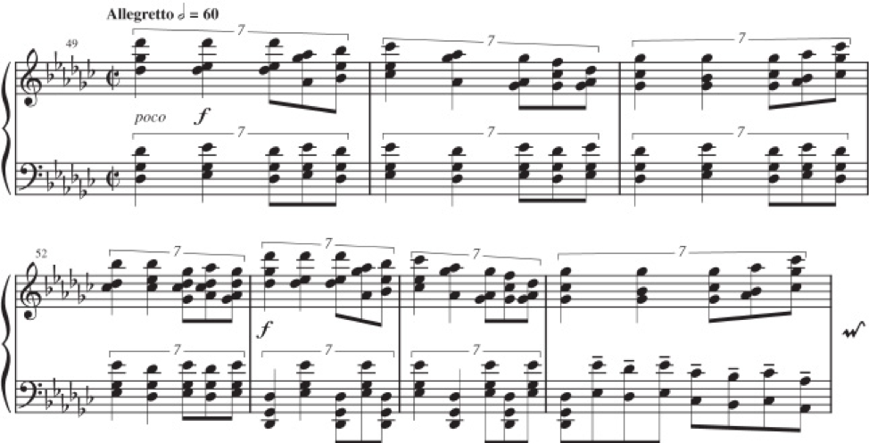
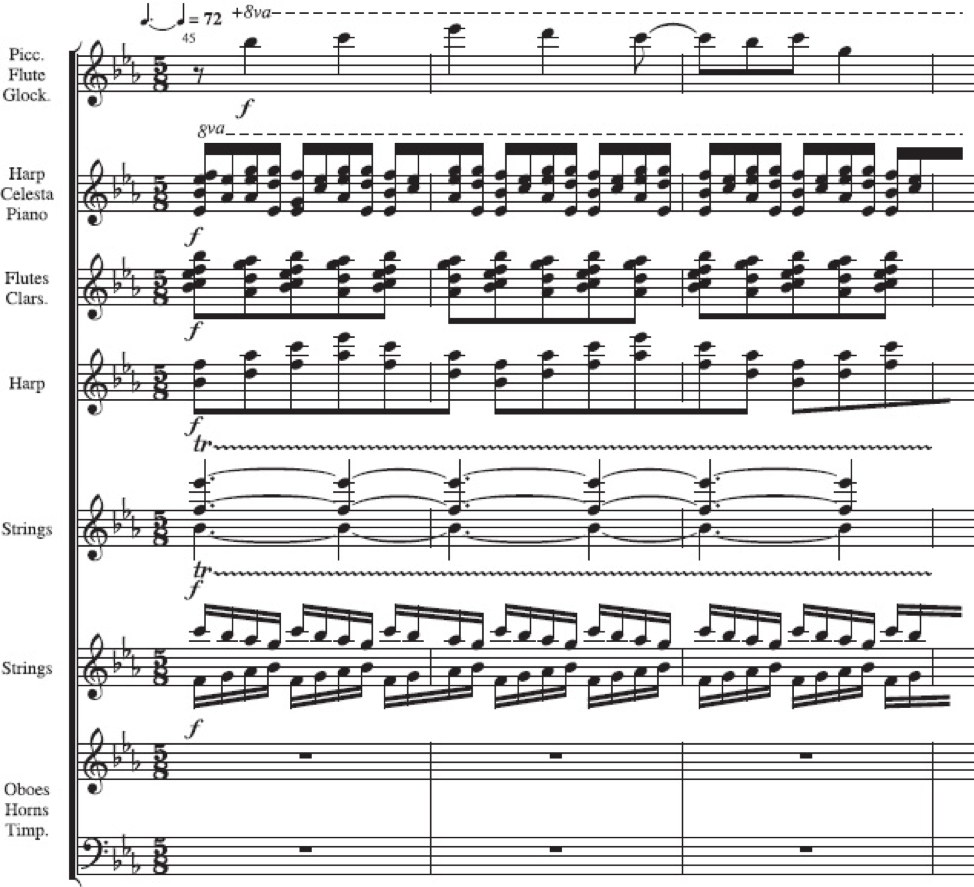
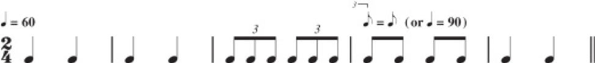

An Introduction to Post-Tonal Music
Materials and Techniques
Chapter 26
What does Post-Tonal mean?
Music composed since the general decline of tonal harmony (ca. 1900) that does not follow traditional tonal conventions.
Post-Tonal Music
- As the tonal system was being stretched to its limits, composers began to explore new methods and concepts.
- The following basic elements of music were ripe for significant modification and development
- Scales (Why only major and minor?)
- Chord Structure (Why only tertian?)
- Harmonic Successions (Does V have to go to I)
- Rhythm & Meter (Can we have shifting rhythmic feels?)
- Texture (What new timbres can we achieve?)
Post-Tonal Music
- We will see two broad paths unfolding in post-tonal harmony.
- Ultrachromaticism - extending the principles of harmonic progressions and voice leading that we have looked at
- a reaction against chromatic excess - composers looking at pre-tonal music, folk music, and maybe non-western musics.
Impressionism
- The term impressionism was first applied to a style of painting that sprang up in France in the late 19th century.
- It is most often associated with the work of Claude Monet (1840–1926) and his contemporaries.
- The primary aim of the artist was that of evoking a certain mood or atmosphere, using light and color in nontraditional ways.
Impressionism
- This concept was reflected in music by a turning away from more orderly formal procedures of the late 18th and early 19th centuries
- and a fascination with color, as expressed through harmony, instrumentation, and the use of rhythm.
Claude Debussy
- Claude Debussy (1862–1918) is considered by many to have made some of the most significant contributions to the evolution of early-twentieth-century musical thinking.
- His compositional style reveals departures from previous practices that, though easily accessible to the tonally oriented ear, clearly defy traditional tonal expectations.
Claude Debussy

Claude Debussy

Debussy, “La Fille aux Cheveux de Lin,” from Preludes, Book I
- Notice the clear suggestion of G♭ major
- But:
- The opening two measures outline an E♭m7 chord, whose function is unclear.
- The first cadence (mm. 2–3) is plagal and thus avoids functional use of the leading tone.
- The progression beginning in m. 5, obscures the G♭ tonal center.
Scale Materials
The Diatonic Modes
- One reaction to the chromatic saturation of the late nineteenth century was a renewed interest in the diatonic modes.
- The simplest way to represent each of the modes is by using the tones of the C major scale, but with a tone other than C serving as the tonal center for each mode.
The Diatonic Modes

- The seven modes can be transposed to all 12 major keys
- Each mode is characterized by a unique arrangement of whole steps and half steps
The Diatonic Modes
We can arrange the modes based on "brightness". (according to the number of major or augmented intervals above the tonal center)
- Locrian
- Ionian
- Mixolydian
- Dorian
- Aeolian
- Phrygian
- Locrian
Pentatonic Scale
- Pentatonic - a five-note scale (ANY five-note scale)
- Five-note scales have played a significant role in music, particularly non-Western music, for centuries.
- The three most common pentatonic scales are:
- Major Pentatonic ( 1 2 3 5 6 )
- Minor Pentatonic ( 1 ♭3 4 5 ♭7 )
- Hirajoshi ( 1 2 ♭3 5 ♭6 )

Pentatonic Scale
- All three pitch collections may be viewed as subsets of a diatonic scale.
- The Major Pentatonic Scale has no half-steps or tritones.
- Consequently, there is no leading tone.
- Any one of its tones can be made to serve as a tonal center. Here are the modes of a major pentatonic:

What does Mode 5 sound like? Minor Pentatonic!
Debussy, Nuages
(start at top of page 6 in score
Synthetic Scales
- The pitch collections we have discussed so far bear a clear resemblance to scales or fragments of scales associated with the diatonic system.
- Post-tonal composers have also, however, made extensive use of synthetic scales.
- The available variety of synthetic scales is limited only by your imagination.
Synthetic Scales
- Let's look at three scales that are interesting because of their symmetrical structure.
- Whole tone ( 1 2 3 ♯4 ♯5 ♯6 )
- Octatonic ( 1 ♭2 ♭3 ♮3 ♯4 5 6 ♭7 )
- Hexatonic ( 1 ♭2 3 4 ♯5 6 )

Debussy, “Voiles,” from Preludes, Book I
Chord Structures
Extended Tertian Harmony
We looked at Ninth, Eleventh, and Thirteenth chords in Chapter 14.
Post-Tonal composers used these tall chords in both functional (like a V13) and nonfunctional ways (just for color/sonority)
Maurice Ravel: “Rigaudon,” from Le Tombeau de Couperin
Jean-Philippe Collard, piano
Maurice Ravel: “Rigaudon,” from Le Tombeau de Couperin
-
What chord progression happens in the first two measures?
IVM7 → ii11 → V13 → I - We see that Ravel is using extended tertian harmony that is still functional, but it adds a depth of color to the sound.
Polyharmony
- Polychord - a sonority consisting of two or more chords from different harmonic that sound simultaneously
- The components of a polychord are called chordal units.
- Polychords may be built from superimposed triads, seventh chords, and other tertian sonorities.
Polyharmony

Lead-sheet symbols can be used to identify the chordal units of polychords, which may be separated either by a – .
Polyharmony
Polyharmony
- Polytonality - when two or more key centers are heard at the same time.
- This occurs considerably less frequently than polychordality.
- It may also be referred to as bitonality.
Béla Bartók, “Playsong,” Mikrokosmos no. 105
Chord/Scale Connections
- In tonal music, we hear chords as distinct units, even when we invert them and obscure them with non-chord tones.
- In post-tonal music, we often hear chords as a reference to the scale that they are made out of.
Chord/Scale Connections
- In this example, we hear 5 very different sonorities.
- They are all made of the same scale. What scale is that?
- F major pentatonic (F-G-A-C-D)
Debussy, “La Cathédrale Engloutie,” from Preludes, Book I
- Except for the moving bass line and C♯ in m. 7, the pitches used in this first 7 measures of this work adhere strictly to a major pentatonic scale built on G (G–A–B–D–E).
Quartal and Secundal Harmony
- If tertian harmony is made of thrids,
- quartal harmony is made of stacked fourths
- and secudnal harmony is made of stacked seconds
- Quartal Harmony is closely relatedl to quintal harmony, which is made of stacked fifths. Why?
Paul Hindemith: Flute Sonata, II
- The opening measure is essentially derived from the following stacked 4th sonority.
- G♯ - C♯ - F♯ - B
Tone Clusters
- Tone Cluster - Any collection of three or more adjacent pitches in secundal relationship (can also be called a cluster chord)
- The term was coined by the American composer Henry Cowell, whose early experiments called for pianists to play certain passages with fists, palms, and, frequently, the entire forearm.
The Tides of Manaunaun by Henry Cowell
Other Concepts
Parallelism
- The treatment of texture plays a significant role in our perception of music since 1900.
- Many aspects contribute significantly to our impression of the music as having a tonal center or not.
- Instrumental timbre
- Chord Structure
- Melodic Construction
- How one musical event move to another.
- One of the earliest indications of a break with traditional procedures of harmonic progression was the use of parallel motion between chord members.
Parallelism
- Planing - The use of chords moving in parallel motion.
- Debussy disrupts our tonal expectations by composing parallel movement of Mm7 chords, followed with parallel movement of augmented triads
Debussy, Nuages
(start at top of page 5 in score
Debussy, Nuages
- Real Planing - Parallel movement of vertical sonorities whose construction remains unchanged; both the numerical value and quality of the intervals will remain constant.
Debussy, “La Cathédrale Engloutie,” from Preludes, Book I
Debussy, “La Cathédrale Engloutie,” from Preludes, Book I
- Diatonic Planing - Parallel movement of vertical sonorities whose quality is determined by the prevailing diatonic scale; the numerical value of the intervals will remain constant, but their quality will change as the voices move throughout the diatonic scale.
- Mixed Planing - Parallel voice motion that can be explained neither by consistency of chord type nor by the limitations of a single scale. (Emaj ⇆ Gmin)
Pandiatonicism
- Pandiatonicism - The attempt to equalize the seven tones of the diatonic scale so that no single pitch is heard as a tone center.
- Some identifying characteristics include:
- use of a key signature
- absence of accidentals
- free use of the seven tones of the major scale
- absence of functional harmonic movement
Excursions, op. 20, III by Samuel Barber
Video Excursions, op. 20, III by Samuel Barber
- uses of a key signature of G♭ major
- there are no accidentals
- freely use of the seven tones of the major scale
- there is no functional harmonic movement
- Also, Barber mainly is using non-tertian harmonies.
Petrouchka, "The Masqueraders" by Igor Stravinsky
Video Rhythm & Meter
Early twentieth-century composition saw significant innovations in the areas of rhythm and meter
Rhythm & Meter
- Any time-value relationship can be expressed as a ratio:
- for example, 2:1, 3:1, 3:2, 4:1, 4:2, 4:3, and so forth
- Polyrhythm - The simultaneous presentation of two or more aurally contrasting rhythmic streams.
We saw the above polyrhythm in the Barber example
Rhythm & Meter
- Mixed Meter - The use of rapidly changing meter signatures.
- Ametric Music - Music that lacks an aurally perceivable meter.
- Metric Modulation - immediate change in tempo created by equating a particular note value to another note value, a proportional note value, usually located in the next bar. 
- Polytempo - the simultaneous use of two or more strikingly contrasted tempos.
Examples of rhythmic and metric devices in the 20th and 21st centuries.
Mechanical Rhythm
- Mechanical Rhythm - a rhythm that requires a machine for precise execution
- Conlon Nancarrow composed studies for player piano to explore this:
Summary
- We have seen two broad paths unfolding in post-tonal harmony.
- a reaction against chromatic excess - composers looking at pre-tonal music, folk music, and maybe non-western musics.
- on this path, we have seen composers use scales, chord structures, and other concepts to find new sounds
- The other more revolutionary path of Ultrachromaticism we will look at in the coming weeks.